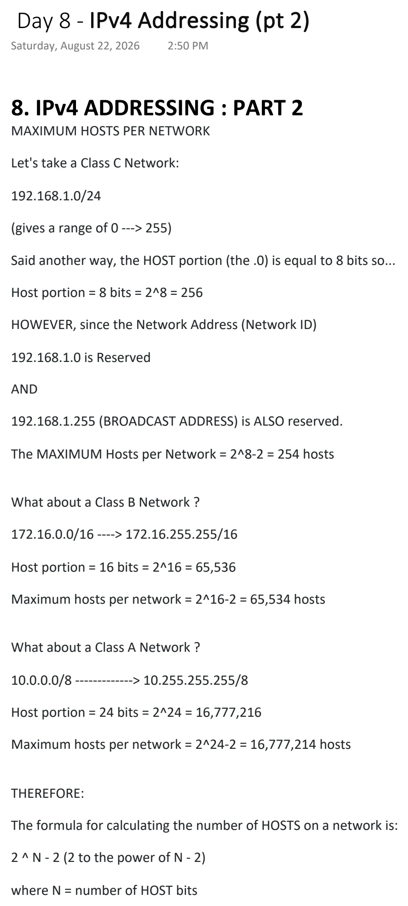
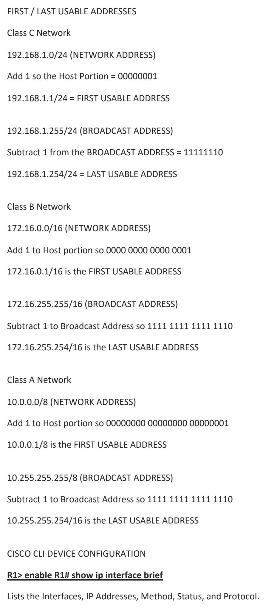
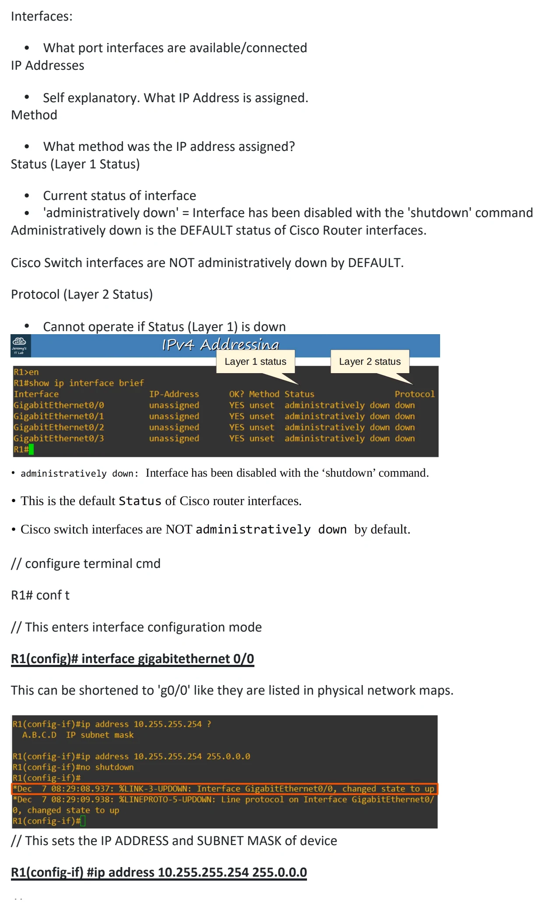
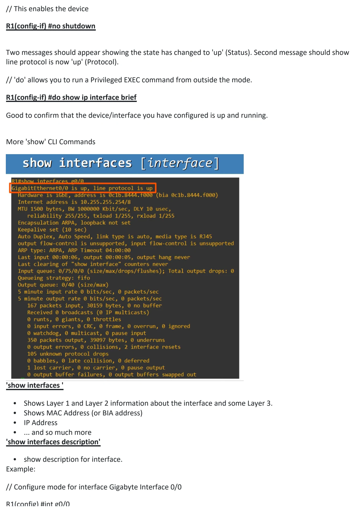
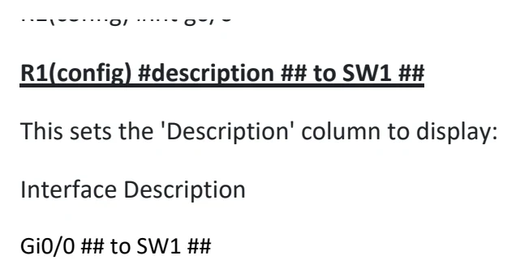

IPv4 Addressing (pt 2)
Download original PDF




Text view — IPv4 Addressing (pt 2)
Extracted from the original export. Diagrams and some formatting appear in the notes above.
Day 8 - IPv4 Addressing (pt 2) Saturday, August 22, 2026 2:50 PM 8. IPv4 ADDRESSING : PART 2 MAXIMUM HOSTS PER NETWORK Let's take a Class C Network: 192.168.1.0/24 (gives a range of 0 ---> 255) Said another way, the HOST portion (the .0) is equal to 8 bits so... Host portion = 8 bits = 2^8 = 256 HOWEVER, since the Network Address (Network ID) 192.168.1.0 is Reserved AND 192.168.1.255 (BROADCAST ADDRESS) is ALSO reserved. The MAXIMUM Hosts per Network = 2^8-2 = 254 hosts What about a Class B Network ? 172.16.0.0/16 ----> 172.16.255.255/16 Host portion = 16 bits = 2^16 = 65,536 Maximum hosts per network = 2^16-2 = 65,534 hosts What about a Class A Network ? 10.0.0.0/8 -------------> 10.255.255.255/8 Host portion = 24 bits = 2^24 = 16,777,216 Maximum hosts per network = 2^24-2 = 16,777,214 hosts THEREFORE: The formula for calculating the number of HOSTS on a network is: 2 ^ N - 2 (2 to the power of N - 2) where N = number of HOST bits FIRST / LAST USABLE ADDRESSES Class C Network 192.168.1.0/24 (NETWORK ADDRESS) Add 1 so the Host Portion = 00000001 192.168.1.1/24 = FIRST USABLE ADDRESS 192.168.1.255/24 (BROADCAST ADDRESS) Subtract 1 from the BROADCAST ADDRESS = 11111110 192.168.1.254/24 = LAST USABLE ADDRESS Class B Network 172.16.0.0/16 (NETWORK ADDRESS) Add 1 to Host portion so 0000 0000 0000 0001 172.16.0.1/16 is the FIRST USABLE ADDRESS 172.16.255.255/16 (BROADCAST ADDRESS) Subtract 1 to Broadcast Address so 1111 1111 1111 1110 172.16.255.254/16 is the LAST USABLE ADDRESS Class A Network 10.0.0.0/8 (NETWORK ADDRESS) Add 1 to Host portion so 00000000 00000000 00000001 10.0.0.1/8 is the FIRST USABLE ADDRESS 10.255.255.255/8 (BROADCAST ADDRESS) Subtract 1 to Broadcast Address so 1111 1111 1111 1110 10.255.255.254/16 is the LAST USABLE ADDRESS CISCO CLI DEVICE CONFIGURATION R1> enable R1# show ip interface brief Lists the Interfaces, IP Addresses, Method, Status, and Protocol. Interfaces: • What port interfaces are available/connected IP Addresses • Self explanatory. What IP Address is assigned. Method • What method was the IP address assigned? Status (Layer 1 Status) • Current status of interface • 'administratively down' = Interface has been disabled with the 'shutdown' command Administratively down is the DEFAULT status of Cisco Router interfaces. Cisco Switch interfaces are NOT administratively down by DEFAULT. Protocol (Layer 2 Status) • Cannot operate if Status (Layer 1) is down // configure terminal cmd R1# conf t // This enters interface configuration mode R1(config)# interface gigabitethernet 0/0 This can be shortened to 'g0/0' like they are listed in physical network maps. // This sets the IP ADDRESS and SUBNET MASK of device R1(config-if) #ip address 10.255.255.254 255.0.0.0 // This enables the device R1(config-if) #no shutdown Two messages should appear showing the state has changed to 'up' (Status). Second message should show line protocol is now 'up' (Protocol). // 'do' allows you to run a Privileged EXEC command from outside the mode. R1(config-if) #do show ip interface brief Good to confirm that the device/interface you have configured is up and running. More 'show' CLI Commands 'show interfaces ' • Shows Layer 1 and Layer 2 information about the interface and some Layer 3. • Shows MAC Address (or BIA address) • IP Address • ... and so much more 'show interfaces description' • show description for interface. Example: // Configure mode for interface Gigabyte Interface 0/0 R1(config) #int g0/0 R1(config) #description ## to SW1 ## This sets the 'Description' column to display: Interface Description Gi0/0 ## to SW1 ## Day 8 - IPv4 Addressing (pt 2) Saturday, August 22, 2026 2:50 PM 8. IPv4 ADDRESSING : PART 2 MAXIMUM HOSTS PER NETWORK Let's take a Class C Network: 192.168.1.0/24 (gives a range of 0 ---> 255) Said another way, the HOST portion (the .0) is equal to 8 bits so... Host portion = 8 bits = 2^8 = 256 HOWEVER, since the Network Address (Network ID) 192.168.1.0 is Reserved AND 192.168.1.255 (BROADCAST ADDRESS) is ALSO reserved. The MAXIMUM Hosts per Network = 2^8-2 = 254 hosts What about a Class B Network ? 172.16.0.0/16 ----> 172.16.255.255/16 Host portion = 16 bits = 2^16 = 65,536 Maximum hosts per network = 2^16-2 = 65,534 hosts What about a Class A Network ? 10.0.0.0/8 -------------> 10.255.255.255/8 Host portion = 24 bits = 2^24 = 16,777,216 Maximum hosts per network = 2^24-2 = 16,777,214 hosts THEREFORE: The formula for calculating the number of HOSTS on a network is: 2 ^ N - 2 (2 to the power of N - 2) where N = number of HOST bits FIRST / LAST USABLE ADDRESSES Class C Network 192.168.1.0/24 (NETWORK ADDRESS) Add 1 so the Host Portion = 00000001 192.168.1.1/24 = FIRST USABLE ADDRESS 192.168.1.255/24 (BROADCAST ADDRESS) Subtract 1 from the BROADCAST ADDRESS = 11111110 192.168.1.254/24 = LAST USABLE ADDRESS Class B Network 172.16.0.0/16 (NETWORK ADDRESS) Add 1 to Host portion so 0000 0000 0000 0001 172.16.0.1/16 is the FIRST USABLE ADDRESS 172.16.255.255/16 (BROADCAST ADDRESS) Subtract 1 to Broadcast Address so 1111 1111 1111 1110 172.16.255.254/16 is the LAST USABLE ADDRESS Class A Network 10.0.0.0/8 (NETWORK ADDRESS) Add 1 to Host portion so 00000000 00000000 00000001 10.0.0.1/8 is the FIRST USABLE ADDRESS 10.255.255.255/8 (BROADCAST ADDRESS) Subtract 1 to Broadcast Address so 1111 1111 1111 1110 10.255.255.254/16 is the LAST USABLE ADDRESS CISCO CLI DEVICE CONFIGURATION R1> enable R1# show ip interface brief Lists the Interfaces, IP Addresses, Method, Status, and Protocol. Interfaces: • What port interfaces are available/connected IP Addresses • Self explanatory. What IP Address is assigned. Method • What method was the IP address assigned? Status (Layer 1 Status) • Current status of interface • 'administratively down' = Interface has been disabled with the 'shutdown' command Administratively down is the DEFAULT status of Cisco Router interfaces. Cisco Switch interfaces are NOT administratively down by DEFAULT. Protocol (Layer 2 Status) • Cannot operate if Status (Layer 1) is down // configure terminal cmd R1# conf t // This enters interface configuration mode R1(config)# interface gigabitethernet 0/0 This can be shortened to 'g0/0' like they are listed in physical network maps. // This sets the IP ADDRESS and SUBNET MASK of device R1(config-if) #ip address 10.255.255.254 255.0.0.0 // This enables the device R1(config-if) #no shutdown Two messages should appear showing the state has changed to 'up' (Status). Second message should show line protocol is now 'up' (Protocol). // 'do' allows you to run a Privileged EXEC command from outside the mode. R1(config-if) #do show ip interface brief Good to confirm that the device/interface you have configured is up and running. More 'show' CLI Commands 'show interfaces ' • Shows Layer 1 and Layer 2 information about the interface and some Layer 3. • Shows MAC Address (or BIA address) • IP Address • ... and so much more 'show interfaces description' • show description for interface. Example: // Configure mode for interface Gigabyte Interface 0/0 R1(config) #int g0/0 R1(config) #description ## to SW1 ## This sets the 'Description' column to display: Interface Description Gi0/0 ## to SW1 ## Day 8 - IPv4 Addressing (pt 2) Saturday, August 22, 2026 2:50 PM 8. IPv4 ADDRESSING : PART 2 MAXIMUM HOSTS PER NETWORK Let's take a Class C Network: 192.168.1.0/24 (gives a range of 0 ---> 255) Said another way, the HOST portion (the .0) is equal to 8 bits so... Host portion = 8 bits = 2^8 = 256 HOWEVER, since the Network Address (Network ID) 192.168.1.0 is Reserved AND 192.168.1.255 (BROADCAST ADDRESS) is ALSO reserved. The MAXIMUM Hosts per Network = 2^8-2 = 254 hosts What about a Class B Network ? 172.16.0.0/16 ----> 172.16.255.255/16 Host portion = 16 bits = 2^16 = 65,536 Maximum hosts per network = 2^16-2 = 65,534 hosts What about a Class A Network ? 10.0.0.0/8 -------------> 10.255.255.255/8 Host portion = 24 bits = 2^24 = 16,777,216 Maximum hosts per network = 2^24-2 = 16,777,214 hosts THEREFORE: The formula for calculating the number of HOSTS on a network is: 2 ^ N - 2 (2 to the power of N - 2) where N = number of HOST bits FIRST / LAST USABLE ADDRESSES Class C Network 192.168.1.0/24 (NETWORK ADDRESS) Add 1 so the Host Portion = 00000001 192.168.1.1/24 = FIRST USABLE ADDRESS 192.168.1.255/24 (BROADCAST ADDRESS) Subtract 1 from the BROADCAST ADDRESS = 11111110 192.168.1.254/24 = LAST USABLE ADDRESS Class B Network 172.16.0.0/16 (NETWORK ADDRESS) Add 1 to Host portion so 0000 0000 0000 0001 172.16.0.1/16 is the FIRST USABLE ADDRESS 172.16.255.255/16 (BROADCAST ADDRESS) Subtract 1 to Broadcast Address so 1111 1111 1111 1110 172.16.255.254/16 is the LAST USABLE ADDRESS Class A Network 10.0.0.0/8 (NETWORK ADDRESS) Add 1 to Host portion so 00000000 00000000 00000001 10.0.0.1/8 is the FIRST USABLE ADDRESS 10.255.255.255/8 (BROADCAST ADDRESS) Subtract 1 to Broadcast Address so 1111 1111 1111 1110 10.255.255.254/16 is the LAST USABLE ADDRESS CISCO CLI DEVICE CONFIGURATION R1> enable R1# show ip interface brief Lists the Interfaces, IP Addresses, Method, Status, and Protocol. Interfaces: • What port interfaces are available/connected IP Addresses • Self explanatory. What IP Address is assigned. Method • What method was the IP address assigned? Status (Layer 1 Status) • Current status of interface • 'administratively down' = Interface has been disabled with the 'shutdown' command Administratively down is the DEFAULT status of Cisco Router interfaces. Cisco Switch interfaces are NOT administratively down by DEFAULT. Protocol (Layer 2 Status) • Cannot operate if Status (Layer 1) is down // configure terminal cmd R1# conf t // This enters interface configuration mode R1(config)# interface gigabitethernet 0/0 This can be shortened to 'g0/0' like they are listed in physical network maps. // This sets the IP ADDRESS and SUBNET MASK of device R1(config-if) #ip address 10.255.255.254 255.0.0.0 // This enables the device R1(config-if) #no shutdown Two messages should appear showing the state has changed to 'up' (Status). Second message should show line protocol is now 'up' (Protocol). // 'do' allows you to run a Privileged EXEC command from outside the mode. R1(config-if) #do show ip interface brief Good to confirm that the device/interface you have configured is up and running. More 'show' CLI Commands 'show interfaces ' • Shows Layer 1 and Layer 2 information about the interface and some Layer 3. • Shows MAC Address (or BIA address) • IP Address • ... and so much more 'show interfaces description' • show description for interface. Example: // Configure mode for interface Gigabyte Interface 0/0 R1(config) #int g0/0 R1(config) #description ## to SW1 ## This sets the 'Description' column to display: Interface Description Gi0/0 ## to SW1 ## Day 8 - IPv4 Addressing (pt 2) Saturday, August 22, 2026 2:50 PM 8. IPv4 ADDRESSING : PART 2 MAXIMUM HOSTS PER NETWORK Let's take a Class C Network: 192.168.1.0/24 (gives a range of 0 ---> 255) Said another way, the HOST portion (the .0) is equal to 8 bits so... Host portion = 8 bits = 2^8 = 256 HOWEVER, since the Network Address (Network ID) 192.168.1.0 is Reserved AND 192.168.1.255 (BROADCAST ADDRESS) is ALSO reserved. The MAXIMUM Hosts per Network = 2^8-2 = 254 hosts What about a Class B Network ? 172.16.0.0/16 ----> 172.16.255.255/16 Host portion = 16 bits = 2^16 = 65,536 Maximum hosts per network = 2^16-2 = 65,534 hosts What about a Class A Network ? 10.0.0.0/8 -------------> 10.255.255.255/8 Host portion = 24 bits = 2^24 = 16,777,216 Maximum hosts per network = 2^24-2 = 16,777,214 hosts THEREFORE: The formula for calculating the number of HOSTS on a network is: 2 ^ N - 2 (2 to the power of N - 2) where N = number of HOST bits FIRST / LAST USABLE ADDRESSES Class C Network 192.168.1.0/24 (NETWORK ADDRESS) Add 1 so the Host Portion = 00000001 192.168.1.1/24 = FIRST USABLE ADDRESS 192.168.1.255/24 (BROADCAST ADDRESS) Subtract 1 from the BROADCAST ADDRESS = 11111110 192.168.1.254/24 = LAST USABLE ADDRESS Class B Network 172.16.0.0/16 (NETWORK ADDRESS) Add 1 to Host portion so 0000 0000 0000 0001 172.16.0.1/16 is the FIRST USABLE ADDRESS 172.16.255.255/16 (BROADCAST ADDRESS) Subtract 1 to Broadcast Address so 1111 1111 1111 1110 172.16.255.254/16 is the LAST USABLE ADDRESS Class A Network 10.0.0.0/8 (NETWORK ADDRESS) Add 1 to Host portion so 00000000 00000000 00000001 10.0.0.1/8 is the FIRST USABLE ADDRESS 10.255.255.255/8 (BROADCAST ADDRESS) Subtract 1 to Broadcast Address so 1111 1111 1111 1110 10.255.255.254/16 is the LAST USABLE ADDRESS CISCO CLI DEVICE CONFIGURATION R1> enable R1# show ip interface brief Lists the Interfaces, IP Addresses, Method, Status, and Protocol. Interfaces: • What port interfaces are available/connected IP Addresses • Self explanatory. What IP Address is assigned. Method • What method was the IP address assigned? Status (Layer 1 Status) • Current status of interface • 'administratively down' = Interface has been disabled with the 'shutdown' command Administratively down is the DEFAULT status of Cisco Router interfaces. Cisco Switch interfaces are NOT administratively down by DEFAULT. Protocol (Layer 2 Status) • Cannot operate if Status (Layer 1) is down // configure terminal cmd R1# conf t // This enters interface configuration mode R1(config)# interface gigabitethernet 0/0 This can be shortened to 'g0/0' like they are listed in physical network maps. // This sets the IP ADDRESS and SUBNET MASK of device R1(config-if) #ip address 10.255.255.254 255.0.0.0 // This enables the device R1(config-if) #no shutdown Two messages should appear showing the state has changed to 'up' (Status). Second message should show line protocol is now 'up' (Protocol). // 'do' allows you to run a Privileged EXEC command from outside the mode. R1(config-if) #do show ip interface brief Good to confirm that the device/interface you have configured is up and running. More 'show' CLI Commands 'show interfaces ' • Shows Layer 1 and Layer 2 information about the interface and some Layer 3. • Shows MAC Address (or BIA address) • IP Address • ... and so much more 'show interfaces description' • show description for interface. Example: // Configure mode for interface Gigabyte Interface 0/0 R1(config) #int g0/0 R1(config) #description ## to SW1 ## This sets the 'Description' column to display: Interface Description Gi0/0 ## to SW1 ## Day 8 - IPv4 Addressing (pt 2) Saturday, August 22, 2026 2:50 PM 8. IPv4 ADDRESSING : PART 2 MAXIMUM HOSTS PER NETWORK Let's take a Class C Network: 192.168.1.0/24 (gives a range of 0 ---> 255) Said another way, the HOST portion (the .0) is equal to 8 bits so... Host portion = 8 bits = 2^8 = 256 HOWEVER, since the Network Address (Network ID) 192.168.1.0 is Reserved AND 192.168.1.255 (BROADCAST ADDRESS) is ALSO reserved. The MAXIMUM Hosts per Network = 2^8-2 = 254 hosts What about a Class B Network ? 172.16.0.0/16 ----> 172.16.255.255/16 Host portion = 16 bits = 2^16 = 65,536 Maximum hosts per network = 2^16-2 = 65,534 hosts What about a Class A Network ? 10.0.0.0/8 -------------> 10.255.255.255/8 Host portion = 24 bits = 2^24 = 16,777,216 Maximum hosts per network = 2^24-2 = 16,777,214 hosts THEREFORE: The formula for calculating the number of HOSTS on a network is: 2 ^ N - 2 (2 to the power of N - 2) where N = number of HOST bits FIRST / LAST USABLE ADDRESSES Class C Network 192.168.1.0/24 (NETWORK ADDRESS) Add 1 so the Host Portion = 00000001 192.168.1.1/24 = FIRST USABLE ADDRESS 192.168.1.255/24 (BROADCAST ADDRESS) Subtract 1 from the BROADCAST ADDRESS = 11111110 192.168.1.254/24 = LAST USABLE ADDRESS Class B Network 172.16.0.0/16 (NETWORK ADDRESS) Add 1 to Host portion so 0000 0000 0000 0001 172.16.0.1/16 is the FIRST USABLE ADDRESS 172.16.255.255/16 (BROADCAST ADDRESS) Subtract 1 to Broadcast Address so 1111 1111 1111 1110 172.16.255.254/16 is the LAST USABLE ADDRESS Class A Network 10.0.0.0/8 (NETWORK ADDRESS) Add 1 to Host portion so 00000000 00000000 00000001 10.0.0.1/8 is the FIRST USABLE ADDRESS 10.255.255.255/8 (BROADCAST ADDRESS) Subtract 1 to Broadcast Address so 1111 1111 1111 1110 10.255.255.254/16 is the LAST USABLE ADDRESS CISCO CLI DEVICE CONFIGURATION R1> enable R1# show ip interface brief Lists the Interfaces, IP Addresses, Method, Status, and Protocol. Interfaces: • What port interfaces are available/connected IP Addresses • Self explanatory. What IP Address is assigned. Method • What method was the IP address assigned? Status (Layer 1 Status) • Current status of interface • 'administratively down' = Interface has been disabled with the 'shutdown' command Administratively down is the DEFAULT status of Cisco Router interfaces. Cisco Switch interfaces are NOT administratively down by DEFAULT. Protocol (Layer 2 Status) • Cannot operate if Status (Layer 1) is down // configure terminal cmd R1# conf t // This enters interface configuration mode R1(config)# interface gigabitethernet 0/0 This can be shortened to 'g0/0' like they are listed in physical network maps. // This sets the IP ADDRESS and SUBNET MASK of device R1(config-if) #ip address 10.255.255.254 255.0.0.0 // This enables the device R1(config-if) #no shutdown Two messages should appear showing the state has changed to 'up' (Status). Second message should show line protocol is now 'up' (Protocol). // 'do' allows you to run a Privileged EXEC command from outside the mode. R1(config-if) #do show ip interface brief Good to confirm that the device/interface you have configured is up and running. More 'show' CLI Commands 'show interfaces ' • Shows Layer 1 and Layer 2 information about the interface and some Layer 3. • Shows MAC Address (or BIA address) • IP Address • ... and so much more 'show interfaces description' • show description for interface. Example: // Configure mode for interface Gigabyte Interface 0/0 R1(config) #int g0/0 R1(config) #description ## to SW1 ## This sets the 'Description' column to display: Interface Description Gi0/0 ## to SW1 ##